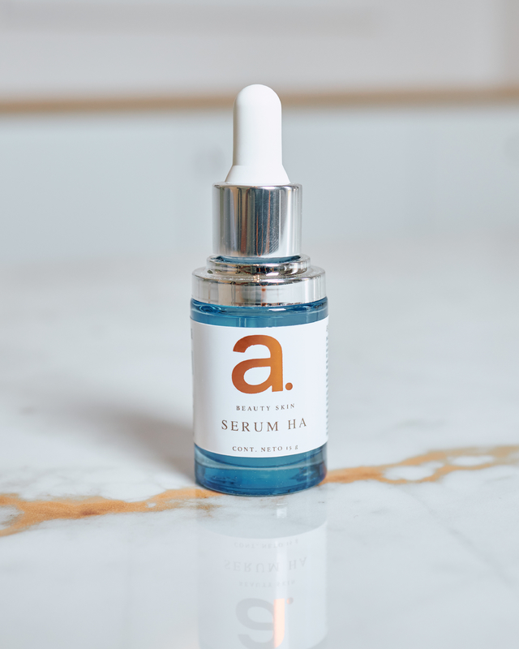

La llave para una piel más lisa, joven y radiante. Con textura ligera, esta humectante con amplio espectro SPF15 ayuda a revelar el potencial juventud de tu piel.
Observa como tu piel vuelve a la vida nueva radiante

Crema revitalift de noche con acido hialuronico con hidratacion tan intensa que rellena las lineas de expresion desde adentro. La nueva línea de Revitalift contiene ácido hialurónico puro, un ingrediente fundamental que aporta hidratación y rellena la piel contribuyendo a recuperar el volumen facial.

La llave para una piel más lisa, joven y radiante. Con textura ligera, esta humectante con amplio espectro SPF15 ayuda a revelar el potencial juventud de tu piel.
Observa como tu piel vuelve a la vida nueva radiante

Fórmula reparadora e hidratante que contiene acido hialuronico de alto y bajo peso molecular. Enriquecido con Vit B3 Y B5.

Los Laboratorios L'Oréal Paris crean Hidra-Total 5 Anti-arrugas, un tratamiento hidratante que cubre 5 necesidades de la piel. 5 acciones y resultados: 1. Hidrata 2. Combate las arrugas 3. Nutre 4. Reafirma 5. Redefine

Minéral 89 Probiotic Fractions
Concentrado reparador y regenerador.
Compuesto por fracciones probióticas cultivadas con Agua Volcánica de Vichy y potenciadas con vitaminas antioxidantes como la niacinamida, regenera los signos visibles de la salud de la piel.
Día tras día, la piel tiene un aspecto más luminoso, recupera la elasticidad y se reducen las líneas finas de expresión a medida que se hidrata saludablemente.